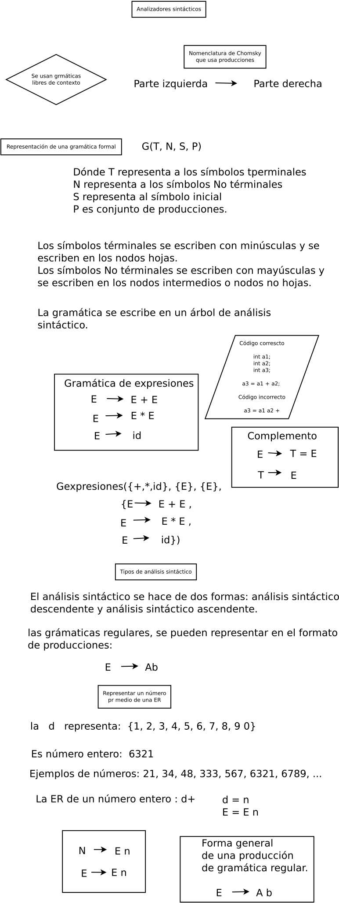

Tipos de analizadores sintácticos
Para estudiar los analizadores sintácticos se usan los árboles de análisis sintáctico. El cuál es un grafo que tiene una raiz y hojas. Por lo que se puede hacer un recorrido de la raiz a las hojas o el recorrido de las hojas a la raiz. Entonces el análisis se practica de manera descendente o de manera ascendente.
Definición de árbol sintáctico. Este árbol presenta en cada uno de sus nodos el sı́mbolo no terminal, de tal manera que se presenta la sintaxis de la gramática.
E → E + E, E → E * E, E → id

Descendentes. El análisis se hace de la raiz a las hojas.

Ascendentes. El análisis se hace de las hojas a la raiz.

Engineering a compiler, Keith D. Cooper and Linda Torczon, Pág. 1-3
Jerarquía de Chomsky
Definición de gramática. Es una cuarteta que se forma de lo siguiente.
G(N, T, S, P)
Dónde, los elementos de la gramática son los siguientes:
N: representa a los no terminales.
T: representa a los terminales.
S: representa el símbolo inicial.
P: representa el conjunto de producciones, P → α
Gramáticas regulares. Se usan para reconocer tokens.
La gramática 3 o gramática regular tiene la forma:
A → a
o
A → aB
que es la forma lineal derecha o bien.
A → a
o
A → Ba
que es la forma lineal izquierda. Donde A, B ∈ N , a ∈ T ∗ .
Engineering a compiler, Keith D. Cooper and Linda Torczon, Pág. 3
Gramáticas libres de contexto. Se usan para posicionar el orden de los tokens. La gramática 2 o gramática libre de contexto tiene la forma:
A → α
donde A ∈ N y α ∈ V ∗ .
Introduction to Compiler Design, Torben AEgidius Mogensen, Pág. 97
